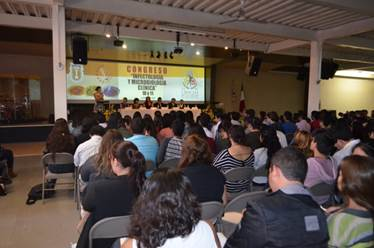

|
Se reúnen Rector de UABC y Diputados |
|
|
|
La Universidad tiene que rendir cuentas y no solamente es un compromiso legal, sino una convicción en los universitarios, así como trabajar para el bien de Baja California, expresó el Rector de la Universidad
|
| Campus Mexicali, 17 de octubre de 2014 |
|
Realizan primer Congreso de Infectología y Microbiología Clínica |
| 
|
|
Alrededor de 450 alumnos de medicina y enfermería de todos los semestres de la Escuela de Ciencias de la Salud de la UABC, así como técnicos laboratoristas de nivel bachillerato, participaron en el inicio del I Congreso
|
| Campus Ensenada, 14 de octubre de 2014 |
|
| Bienvenida |
|
|
Los 2 mil 743 alumnos de nuevo ingreso a la Universidad Autónoma de Baja California (UABC), Campus Mexicali, recibieron una bienvenida en ceremonia presidida por el doctor Felipe Cuamea Velázquez, Rector de la máxima casa de estudios.
En su mensaje, el doctor Cuamea Velázquez exhortó a los nuevos cimarrones a valorar la oportunidad de formarse profesionalmente en esta Benemérita Universidad, cuando en el país existen miles de jóvenes que todavía no tienen acceso a la educación pública y mucho menos a la educación pública de calidad.
Señaló que la UABC admite a 2 de cada 3 aspirantes y que este año realizó un esfuerzo para ingresar a 19 mil 079 estudiantes en el ciclo escolar 2012-2 y en el 2013-1, siendo en este último cuando ingresaron 7 mil 819 alumnos en los tres campus universitarios. “Somos una Universidad que en menos de 10 años pasamos de 23 mil a 57 mil alumnos”, puntualizó el Rector.
|
|
|
| UABC Internacional |
| Correo UABC |
| Programa Ambiental |
| Conferencial Magitrales |
| Gaceta Universitaria |
| Sistesis Periodistica |
| Sorteos |
| Actividades Culturales |
| Radio Universidad |
| Contraloria Social |
| Organizacion institucional |
- Consejo Universitario
- Junta de Gobierno
- Patronato Universitario
- Rectoria
- Tribunal Universitario
- Vicerretoria Ensenada
- Vicerretoria Mexicali
- Vicerretoria Tijuana
- Organigrama
|
| Escuelas - Facultades - Institutos - Centros |
- Campus Ensenada
- Campus Mexicali
- Campus Tijuana
|
| Convocatorias y Resultados |
- Para Estudiantes
- Pare el Personal Academico
- Para Egresados
- Pare el publico en General
- Licitaciones
|
| Normatividad Universitaria |
- Ley Organica
- Estatutos
- Reglamentos
- Acuerdos
- Normas Reglamentarias
- Contratos Colectivos
|
| Transparencia y Acceso a la informacion |
|
|
Menu
Bienvenida del rector
Misión y Visión de la UABC
Símbolo de universitarios
Directorio telefónico de la UABC
Mapa del Sitio
Planos de ubicación
Comunícate con nosotros
Organizacion institucional
Escuelas - Facultades - Institutos - Centros
Convocatorias y Resultados
Normatividad Universitaria
Fundacion UABC
Transparencia y Acceso a la informacion
|
Mas Paginas
SEP
ANUIES
CIEES
CUMEX
CONACYT
COPAES
INEGI
|
Directorio Personal
UABC Internacional
Correo UABC
Programa Ambiental
Conferencial Magitrales
Gaceta Universitaria
Sistesis Periodistica
Sorteos
Actividades Culturales
Radio Universidad
Contraloria Social
|